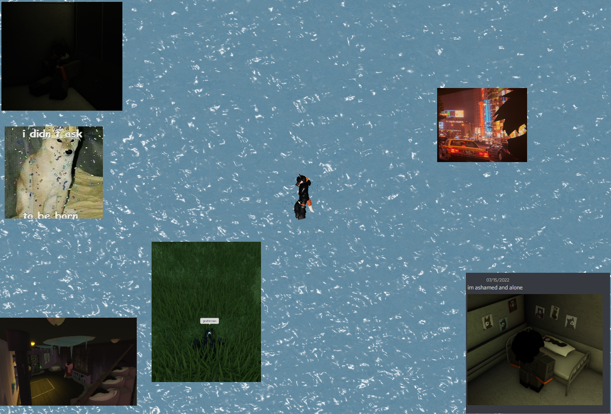

  <body>
        <main>
            <script>
                function audioPlay() {
                    var audio = document.getElementById("audio");
                    audio.volume = 0.1;
                    audio.play()
                }
                function videoPlay() {
                    var video = document.getElementById("video");
                    video.play()
                }
            </script>
            <audio loop preload="auto" id="audio">
                <source src="insanitymadeusblind.mp3" type="audio/mp3">
            </audio>

